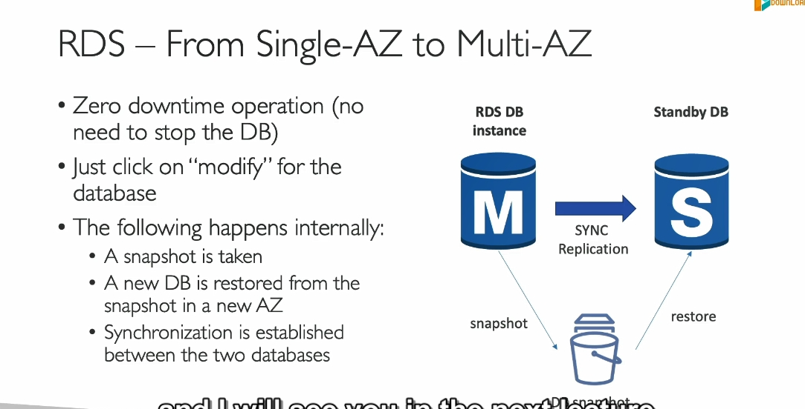

Replica Multiaz
Chi Tiết Hoàn Chỉnh về AWS RDS Read Replicas và Multi-AZ
Khi làm việc với cơ sở dữ liệu quan hệ trên AWS, bạn sẽ thường xuyên gặp hai giải pháp quan trọng: Read Replicas và Multi-AZ Deployments. Dưới đây là các thông tin đầy đủ để bạn hiểu sâu sắc về cách sử dụng và sự khác biệt của hai tính năng này.
1. RDS Read Replicas
Chức năng chính:
- Dùng để mở rộng khả năng đọc (Read Scalability) của cơ sở dữ liệu mà không gây áp lực lên cơ sở dữ liệu chính.
Cách hoạt động:
- Replication không đồng bộ (Asynchronous Replication):
- Khi dữ liệu được ghi vào RDS chính, AWS sẽ sao chép dữ liệu này tới các Read Replica thông qua một tiến trình không đồng bộ.
- Vì tính chất không đồng bộ, các Replica này có thể chứa dữ liệu trễ hơn một chút so với RDS chính.
Đặc điểm quan trọng:
- Hỗ trợ các DB engines:
- Amazon Aurora
- MySQL
- MariaDB
- PostgreSQL
-
SQL Server (chỉ hỗ trợ Read Scale-Out trên Aurora)
-
Số lượng tối đa:
-
Tối đa 15 Read Replicas với Aurora và 5 Read Replicas với các engine khác.
Amazon Relational Database Service (RDS) for MySQL, MariaDB and PostgreSQL now support 15 read replicas per instance, including up to 5 cross region read replicas, delivering up to 3X the previous read capacity. -
Phạm vi hoạt động:
- Cùng AZ (Same AZ): Tăng hiệu suất khi độ trễ mạng thấp.
- Khác AZ (Cross-AZ): Cung cấp khả năng khôi phục trong một vùng sẵn sàng khác.
-
Khác khu vực (Cross-Region): Hỗ trợ sao chép dữ liệu giữa các khu vực địa lý để tăng khả năng chịu lỗi và phục vụ người dùng toàn cầu.
-
Tự động nâng cấp (Promotion):
- Một Read Replica có thể được thăng cấp thành cơ sở dữ liệu độc lập trong trường hợp cần thiết, ví dụ khi bạn muốn chuyển đổi nó thành cơ sở dữ liệu chính.
Trường hợp sử dụng:
- Tăng cường hiệu suất đọc:
- Sử dụng các Read Replica cho các truy vấn phức tạp (báo cáo, thống kê) thay vì để RDS chính xử lý.
- Backup dữ liệu liên tục:
- Nếu xảy ra sự cố với RDS chính, bạn có thể nhanh chóng thăng cấp một Replica để tiếp tục hoạt động.
- Phân tán tải đọc (Load Balancing):
- Sử dụng nhiều Read Replicas với DNS hoặc cơ chế cân bằng tải để phục vụ nhiều ứng dụng truy vấn cùng lúc.
Chi phí:
- Replication trong cùng khu vực (Intra-Region): Miễn phí.
- Replication giữa các khu vực (Inter-Region): Có phí truyền dữ liệu.
2. Multi-AZ Deployments
Chức năng chính:
- Cung cấp khả năng khôi phục sau thảm họa (Disaster Recovery) và độ sẵn sàng cao (High Availability) cho cơ sở dữ liệu.
Cách hoạt động:
- Replication đồng bộ (Synchronous Replication):
- Dữ liệu được sao chép đồng bộ giữa cơ sở dữ liệu chính (Master) và một phiên bản dự phòng (Standby) trong một vùng sẵn sàng khác (AZ).
- Điều này đảm bảo dữ liệu luôn nhất quán giữa Master và Standby.
Đặc điểm quan trọng:
- Failover tự động:
- Khi cơ sở dữ liệu chính gặp sự cố (lỗi mạng, lỗi phần cứng, mất AZ), AWS sẽ tự động kích hoạt Standby Instance làm cơ sở dữ liệu chính.
-
Quá trình chuyển đổi hoàn toàn tự động và ứng dụng chỉ cần kết nối với Endpoint DNS chung.
-
Chỉ sử dụng cho khôi phục (Standby):
- Standby Instance không thể đọc hoặc ghi dữ liệu trong điều kiện bình thường.
-
Chỉ hoạt động khi xảy ra failover.
-
Sao lưu (Backup):
-
Sao lưu tự động của RDS Multi-AZ luôn được thực hiện từ Standby Instance để giảm tải trên cơ sở dữ liệu chính. 
-
Phạm vi triển khai:
- Triển khai Multi-AZ chỉ trong một khu vực (Region), giữa các vùng sẵn sàng (AZ).
- Không hỗ trợ Multi-AZ giữa các khu vực (Cross-Region).
Trường hợp sử dụng:
- Tăng độ sẵn sàng:
- Dùng cho các ứng dụng quan trọng cần thời gian hoạt động liên tục (99.95% SLA).
- Đảm bảo tính toàn vẹn dữ liệu:
- Dữ liệu luôn được sao chép đồng bộ, tránh mất mát dữ liệu khi xảy ra lỗi.
- Khôi phục thảm họa nhanh chóng:
- Ứng dụng có thể tiếp tục hoạt động mà không cần thao tác thủ công khi Master gặp sự cố.
Chi phí:
- Multi-AZ tốn thêm chi phí so với triển khai Single-AZ, do bạn phải trả cho cả Standby Instance và các tài nguyên liên quan.
So sánh chi tiết giữa Read Replicas và Multi-AZ
| Tiêu chí | Read Replicas | Multi-AZ |
|---|---|---|
| Chức năng chính | Mở rộng khả năng đọc | Tăng độ sẵn sàng (HA) |
| Replication | Không đồng bộ (Asynchronous) | Đồng bộ (Synchronous) |
| Failover | Không tự động | Tự động |
| Dùng để đọc | Có, sử dụng cho truy vấn SELECT | Không, chỉ Master nhận đọc/ghi |
| Tối đa số lượng bản sao | 5 (RDS thường) / 15 (Aurora) | 1 Standby Instance |
| Khôi phục sau thảm họa | Hỗ trợ thủ công thông qua việc nâng cấp Replica | Tự động failover |
| Phạm vi | Same AZ, Cross-AZ, Cross-Region | Chỉ Cross-AZ (trong cùng một Region) |
| Chi phí | Phí theo số lượng Replica và vùng sẵn sàng | Chi phí cho cả Standby Instance và dữ liệu |
Tóm tắt cách sử dụng
- Khi nào dùng Read Replicas?
- Bạn cần tăng hiệu suất đọc và giảm tải cho cơ sở dữ liệu chính.
- Bạn có các yêu cầu truy vấn dữ liệu phức tạp (báo cáo, phân tích).
-
Bạn cần sao lưu dữ liệu sang các khu vực khác để phục vụ người dùng toàn cầu.
-
Khi nào dùng Multi-AZ?
- Bạn cần đảm bảo ứng dụng luôn khả dụng, ngay cả khi cơ sở dữ liệu chính gặp sự cố.
- Dữ liệu quan trọng cần bảo vệ khỏi mất mát.
- Ứng dụng không cần mở rộng khả năng đọc.